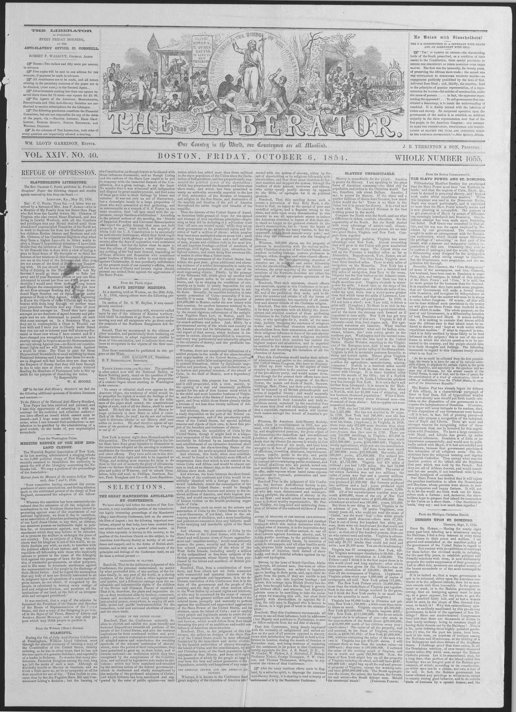

From the Boston Commonwealth.
https://www.loc.gov/resource/sn84031524/1854-10-06/ed-1/?sp=1

See the original pageVer la página original
THE SLAVE POWER AND ST. DOMINGO.
Filibustering Manifest Destiny has proclaimed that the Slave Power must have ‘our Southern islands,’ and that the negroes of Cuba, Hayti, &c., must be doomed to perpetual slavery, and ‘kept at work under white republican masters.’ When this language was used in the Democratic Review, Hayti was named particularly, and it expressed no more than the Slave Power actually means and is now planning to accomplish. The purpose is to get possession of Hayti by means of filibusterism cunningly introduced into Dominica. One insidious attempt has been made upon Dominica, but failed. Duff Green was concerned in that affair, and his son was the agent employed in Dominica by our government. The conspirators sought to make an arrangement with the Dominican authorities, which should secure filibusters the privilege of ‘colonizing’ on that part of the island, with a separate and independent military organization of their own. Ostensibly, they were to be cutters of mahogony and dye woods, but really a filibustering army designed for the subjugation of the island when strong enough in numbers. But the Dominicans were suspicious, and the negotiation fell through.
Recently, Mrs. Cazneau, the ‘Cora Montgomery’ of some of the newspapers, and Gen. Cazneau, her husband, have been sent to Dominica to negotiate, plot, and intrigue, in behalf of this scheme of the Slave Power; and ‘Cora,’ it is said, has far more genius for the business than the General. It is reported that they have made some progress, that our Government will make a formal treaty with Dominica, and recognize its independence as a nation, and that the matter will soon be in shape to come before Congress. Of course, all this will not be done without such provisions in the treaty as will give our Slave Power that foothold in the island which it seeks. The whole purpose, on the part of our Government, is a filibustering invasion of both Dominica and Hayti. It means nothing else. It is seeking to execute that decree which says the African race in that island must be reduced to slavery, and ‘kept at work under white republican masters.’ If what is reported is true, (and it is fully credited by those likely to be best informed on the subject,) this is one of the next forms in which the slavery question is to be presented to the country, and the people should take it to their thoughts and feelings. The following statement in regard to this Cazneau treaty shows what is on foot:—
‘As far as could be collected from the first proceedings, the treaty is to have for one of its various ostensible objects, to stipulate for certain rights in the ports of the Republic, and especially in the spacious and secure bay of Samana, for the armed vessels of the United States, in case of war, and in time of peace, for the establishment of a kind of colonization, black or white, of individuals from the United States, in some part of the Dominican Republic.’
The Boston Post has already begun its defence of this villany, in a characteristic parrgraph of three or four lines, full of hypocritical wonder that anti-slavery men should put forth hostile criticism on the disposition of our government to recognize the independence of Dominica. Of course, that paper will never intimate to its readers, that, if this disposition of our Government were honest—if it is not, in fact, full of plotting piracy—it would also propose a recognition of the independence of Hayti and Liberia. There are more and stronger reasons for recognizing either of these gevernments than can be invented for this negotiation with Dominica. We have a large commerce with Hayti, and Liberia has grown up under American influences. Dominica is of little or no importance commercially, and would now be politically united with Hayti, if it had not rebelled and withdrawn, because that government proclaimed free toleration of all religious sects. The Dominicans have the religious training and bigotry of Spanish Catholics. They occupy what was the Spanish portion of the island, and the Haytiens that part which was held by the French. But they are all of African descent, and would constitute but one people, if not interfered with by the rascally intrigues of outsiders.
Our Slave Power has decided that it will injure the peculiar institution to allow the Dominicans and Haytiens, whose parents were slaves, to realize a prosperous and happy fortune. It will not do to let the world see them work out for themselves such a fortune; and, moreover, the slaveholders hope to prepare that island for annexation to the Union as a slave State. ‘Our Southern islands,’ they say; and how much that signifies!
How to cite this articleCómo citar este artículo
The Liberator. (1854). Boston, Mass., October 6, 18546 de octubre de 1854. DR in the American PressRD en la Prensa Norteamericana. Library of Congress, Chronicling America: https://www.loc.gov/resource/sn84031524/1854-10-06/ed-1/?sp=1
ReferencesReferencias
Library of Congress, Chronicling America: The Liberator, October 6, 18546 de octubre de 1854.
Send an observationEnviar una observación
Does this article connect with your family, your town, or something you know? Did we get something wrong? Write to us. Observations go to the editor's inbox and are read by a person.¿Este artículo conecta con su familia, su pueblo o algo que usted conoce? ¿Nos equivocamos en algo? Escríbanos. Las observaciones llegan al buzón del editor y las lee una persona.
Send observationEnviar observación